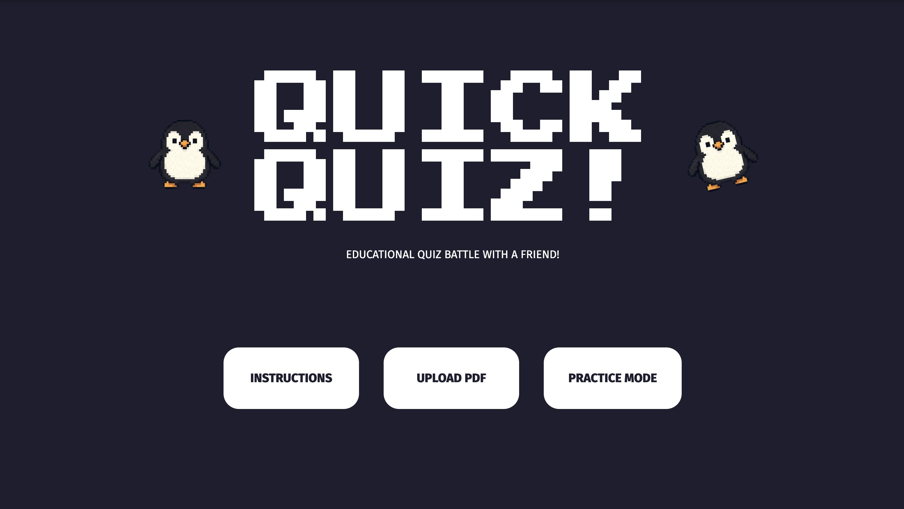
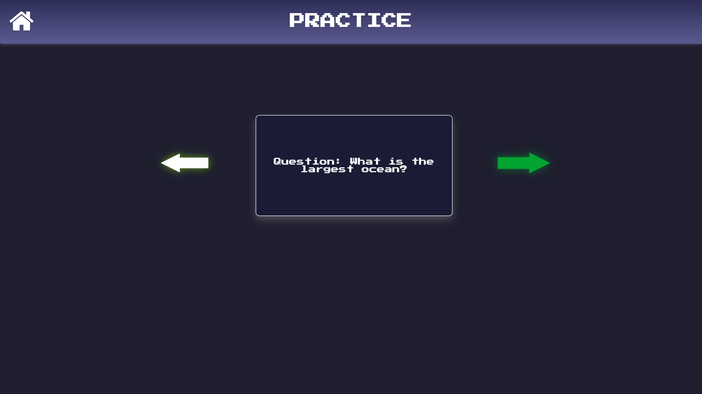
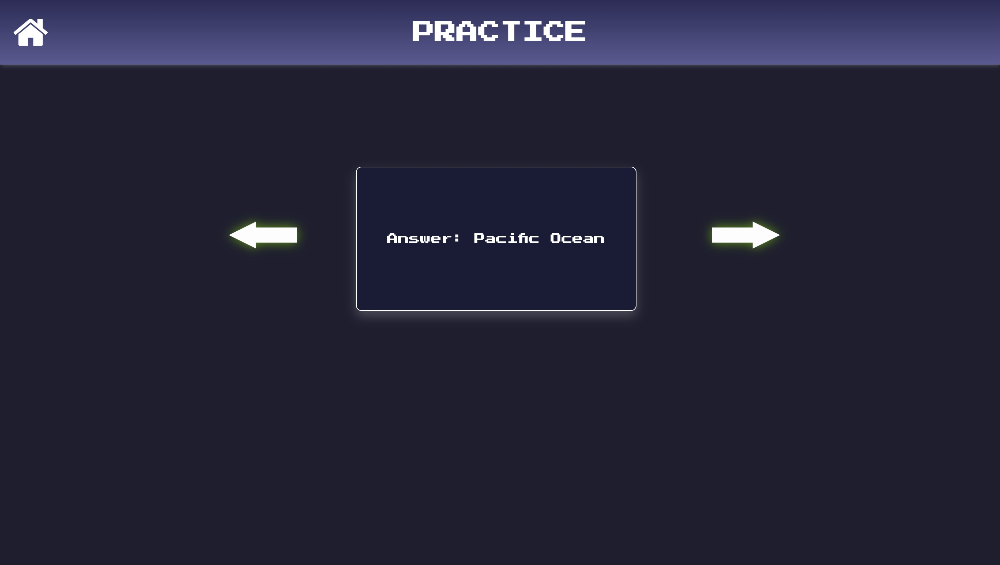
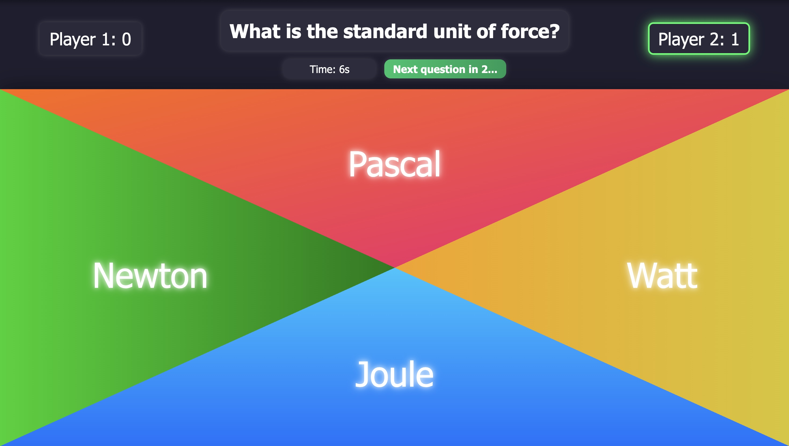
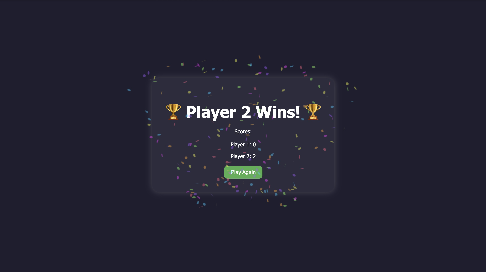
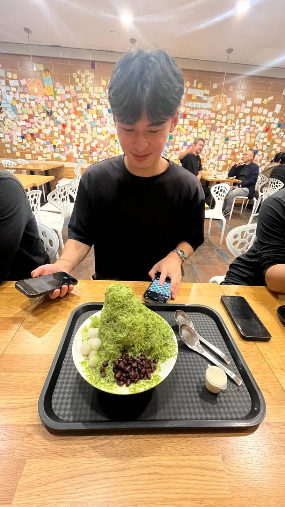
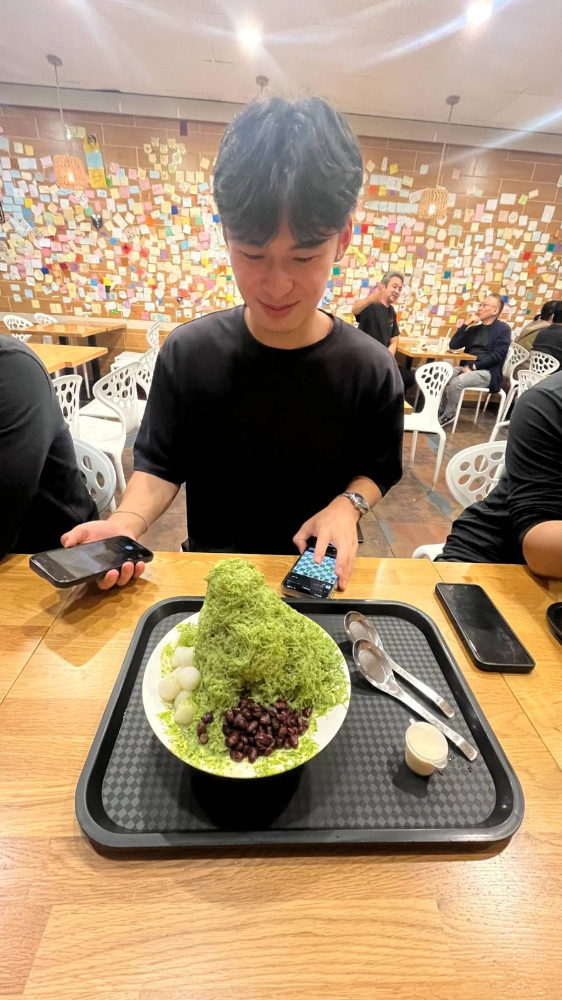

more about me:
Hello, my name is Aleck. I love creative arts, whether it be graphic design, photography, cinematography
or even painting. In my spare time, I enjoy creating graphic designs and am eager to deepen my skills by
combining my creativity with my knowledge of software development. I love spending time outside of home,
often going on hikes and eating food with my friends!
Here are some photos of my life!
projects:
These are some of the projects I've worked on/created over the course of my years as a computer
science major! These projects span personal initiatives and collaborative work, highlighting my ability
to build scalable, efficient, and user-focused applications.
Quick-Quiz is an interactive web application that generates Kahoot-style quizzes from any uploaded PDF
using the OpenAI ChatGPT API. This is a full stack web application that uses uses Node.js with Express
on the backend to serve static files and handle API requests. It integrates the OpenAI API to generate
quiz questions dynamically. The frontend is built with plain HTML, CSS, and JavaScript. If you want to
try the game out for yourself click here
or if you want to check the code out click here.






aleck's website!
- JULY 2025
This is my personal website created with HTML, CSS, and JavaScript, keeping the design minimal and
clean while adding small interactive features. If you want to look at the code for my website feel
free to check my github repository here.


 
